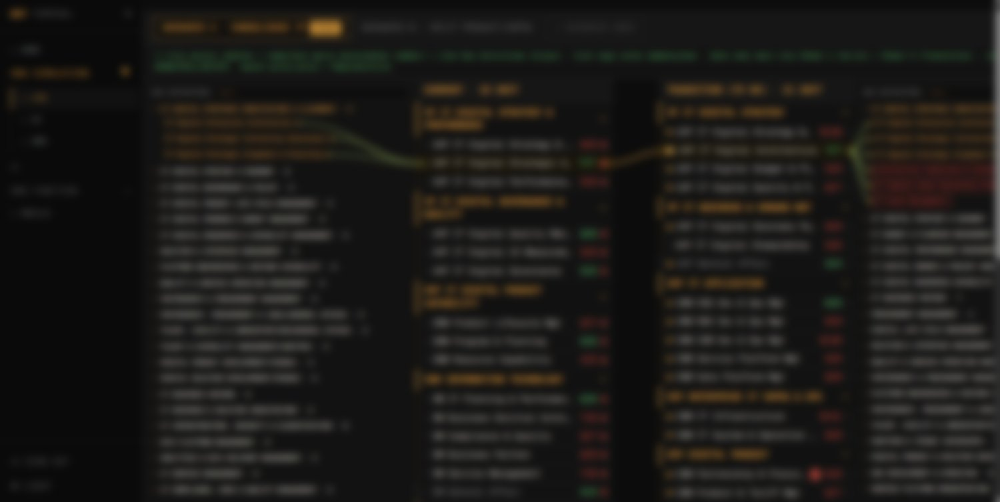

Aplikasi web portal yang mengonsolidasikan tools dan skill Organization Development hasil magang di PT Telkom ke dalam satu tempat. Dibangun dengan Next.js, React, dan Supabase, lengkap dengan gerbang autentikasi dan pengujian otomatis.
Selama magang di unit Organization Development, saya mengumpulkan banyak tools, skill, dan referensi kerja yang tersebar. OD Terminal lahir sebagai portal terpusat yang merapikan semua itu ke dalam satu antarmuka, sehingga lebih mudah diakses, dinavigasi, dan dikembangkan lebih lanjut.
Halaman depan mengarahkan pengguna untuk login lewat SSO korporat, lalu masuk ke ruang simulasi organisasi: membandingkan struktur As-Is dan Transition secara berdampingan, menelusuri perpindahan fungsi antar unit, dan melihat dampak FTE per skenario.

Stack Utama
Kerangka aplikasi web modern dengan komponen React.
Utility-first styling untuk antarmuka yang konsisten & responsif.
Basis data Postgres, autentikasi, dan RLS untuk keamanan data.
Login aman dengan akun Google plus email allowlist.
Runtime & package manager cepat untuk pengembangan.
Deployment otomatis; live di odterminal2.vercel.app.
Portal berisi materi kerja internal, sehingga akses harus dibatasi, dan alur aplikasi perlu tetap stabil seiring penambahan fitur.
Saya menambahkan gerbang autentikasi dengan Google OAuth dan email allowlist untuk membatasi akses, serta menyiapkan pengujian otomatis (Cypress dan Playwright) yang menjaga alur login dan navigasi tetap berjalan saat kode berkembang.
OD Terminal berjalan sebagai portal terpusat yang merapikan tools dan skill Organization Development, dan sudah dideploy di odterminal2.vercel.app. Proyek ini memperkuat kemampuan saya membangun aplikasi web full-stack yang aman dan terverifikasi.
Saya membangun aplikasi ini sebagai pengembang full-stack: merancang antarmuka, mengintegrasikan Supabase (database, autentikasi, dan RLS), menyiapkan gerbang akses, menulis pengujian otomatis, hingga proses deployment ke Vercel.